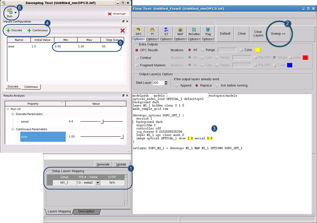

Viewing the possible
results of a Calibre nmOPC, Calibre MPC, Calibre nmSRAF, or Calibre mbSRAF
run across multiple parameter values helps you see potential hotspots
in your design. The Sweeping Tool generates a range of outcomes
using combinations of the parameters you specify.
Prerequisites
Calibre nmOPC, Calibre MPC, Calibre nmSRAF, or Calibre
mbSRAF session file loaded into the RET Flow Tool
The corresponding
design file loaded into Calibre WORKbench
A remote file
for use with Calibre MTflex (optional)
Note: To use the Sweeping Tool in TURBOflex
mode, you must invoke Calibre WORKbench with the ‑remote argument.
Procedure
- In the
RET Flow Tool, ensure that the layers of interest are correctly
mapped in the Setup Layers Mapping section. (If a layer is not mapped,
or if its geometry is not visible in the design window, the sweeping
tool does not generate any output.)
- Click the Sweep button
to raise the Sweeping Tool window, and position the window so that
the RET Flow Tool window is visible.
Figure 1. Sweeping
Tool
- In the
text pane of the RET Flow Tool, double-click to highlight the value
after a parameter. (Each highlight remains selected for every selected
value.)
- In the
Sweeping Tool, click either Discrete or Continuous to
add the parameter to the window.
Discrete —
Creates runs based on a specific list of discrete values.
Continuous —
Creates runs based on a list iterator (start ... end, step sequence).
- Click the
value’s text field(s) to fill in the parameter values to sweep.
For
Discrete parameters, click the Values List field and enter a list
of values separated by semicolons.
For Continuous
parameters, click the Min, Max, and Step Size fields and enter a value
range and a step iterator.
- Click the
arrow next to the Run button. The Sweeping
Tool run controls appear.
Set the controls as needed, then click the Run button.
Note: Clicking Interrupt stops the sweeping
tool run; no intermediate data is created.
Note: The Turbo option in the Run Options
section is enabled only when you invoke Calibre WORKbench with the
‑remote argument and a remotefile. It runs the tool in distributed mode.
Results
The Sweeping Tool generates a list of all possible combinations
of the values you specified, and runs the tool on each combination,
adding layers to the design file using the following criteria:
If the
OPC Results, Contours, or Fragment Markers options were chosen in
Step 6, each combination has a set of layers generated for the OPC,
contour, or fragment operation.
Parameters
are appended to the name using the string syntax “layer”
with a set of appended variations of “_parameter::value.”
For example, in Calibre nmOPC, sweeping a discrete dose value of
1.0 1.1 and a continuous aerial value of 0.95 to 1.05 step 0.05
on a layer M1_1 gives the following result layers:
DOPC_M1_1_dose::1.0_aerial::0.95
DOPC_M1_1_dose::1.0_aerial::1.0
DOPC_M1_1_dose::1.0_aerial::1.05
DOPC_M1_1_dose::1.1_aerial::0.95
DOPC_M1_1_dose::1.1_aerial::1.0
DOPC_M1_1_dose::1.1_aerial::1.05
Use the sliders
in the Results Analysis part at the bottom of the Sweeping Tool
window to show and hide only the layers for the selected parameter
values. For example, with the settings shown in the following figure,
only layers containing the string “dose::1.0_aerial::1.0” are set
as visible.